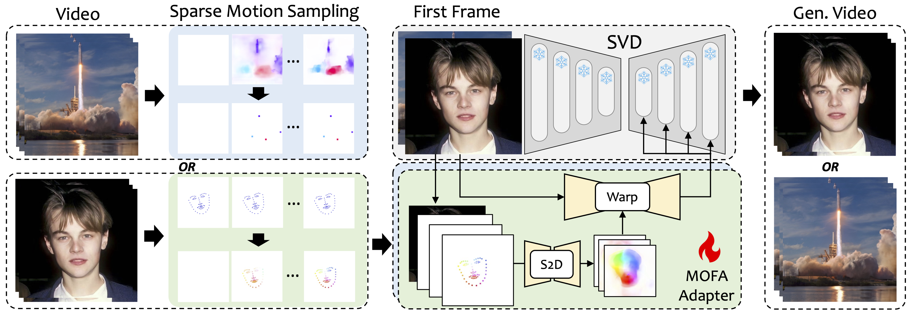

|
Muyao Niu (牛慕尧) Hi, I'm Muyao Niu. I am a 1st year Ph.D. student in the Department of Mechano-Informatics, the University of Tokyo (UTokyo). My supervisor is Prof. Yinqiang Zheng . I received my B.E. degree from Dalian University of Technology in 2022. My research interests include AIGC, Computational Photography, and 3D Vision. Email / Github / Google Scholar / WeChat: MyNiuuu |
{kind=link}
Selected 5 Papers |
|  |
MOFA-Video: Controllable Image Animation via Generative Motion Field Adaptions in Frozen Image-to-Video Diffusion Model
Muyao Niu, Xiaodong Cun, Xintao Wang, Yong Zhang, Ying Shan, Yinqiang Zheng ECCV, 2024 project page / paper / code We introduce MOFA-Video to adapt motions from different domains to the frozen Video Diffusion Model. MOFA-Video can effectively animate a single image using various types of control signals, including trajectories, keypoint sequences, and their combinations. |

|
AniCrafter: Customizing Realistic Human-Centric Animation via Avatar-Background Conditioning in Video Diffusion Models
Muyao Niu, Mingdeng Cao, Yifan Zhan, Qingtian Zhu, Mingze Ma, Jiancheng Zhao, Yanhong Zeng, Zhihang Zhong, Xiao Sun, Yinqiang Zheng arXiv, 2025 project page / paper / code We leverage "3DGS Avatar + Background Video" as guidance for the video diffusion model to insert and animate anyone into any scene following given motion sequence. |
|
Visibility Constrained Wide-band Illumination Spectrum Design for Seeing-in-the-Dark
Muyao Niu, Zhuoxiao Li, Zhihang Zhong, Yinqiang Zheng CVPR, 2023 paper / code We designed an optimal illumination spectrum in the VIS-NIR range by considering human vision constraints, which significantly improves translation performance. A fully differentiable model was proposed, which includes the imaging process, human visual perception, and the enhancement network. |
|
|
RS-NeRF: Neural Radiance Fields from Rolling Shutter Images
Muyao Niu, Tong Chen, Yifan Zhan, Zhuoxiao Li, Xiang Ji, Yinqiang Zheng ECCV, 2024 paper / code We improve NeRF to consider the RS distortions with two technologies: camera trajectory smoothness regularization and multi-sampling strategy. |
|

|
Physics-Based Adversarial Attack on Near-Infrared Human Detector for Nighttime Surveillance Camera Systems
Muyao Niu, Zhuoxiao Li Yifan Zhan, Huy H. Nguyen, Isao Echizen, Yinqiang Zheng ACM MM, 2023 paper / code We introduced an innovative approach that passively manipulates the intensity distribution of NIR images and developed a 3D-aware, black-box attack algorithm to target deep learning-based NIR-powered human detection systems. |
Full List |
Interns
2024.08 - 2025.07: Computer Vision Research Intern at Shanghai AI Lab, mentored by Zhihang Zhong and Xiao Sun.
|
Awards/Scholarships
BOOST NAIS Special Research Scholarship (3,900,000 JPY / year), The University of Tokyo, 2024.10 - 2027.09 |
|
The template comes from the personal website of Jon Barron. |